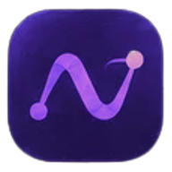

PlannexusPolítica de Privacidade
Última atualização: 14 de novembro de 2026
Esta política explica quais dados o aplicativo Plannexus
(pacote com.lurydev.plannexus, disponível também em
plannexus.vercel.app) coleta, para que eles são usados e como você
pode pedir a exclusão deles. O Plannexus é desenvolvido e mantido por
LuryDev.
1. Dados que coletamos
Dados da sua conta
- Nome e endereço de e-mail informados no cadastro.
- Se você entrar com o Google: nome, e-mail e foto do perfil da sua Conta Google.
- Um identificador único da conta, gerado automaticamente.
- Sua senha é tratada pelo serviço de autenticação do Google Firebase. Nós não temos acesso a ela.
Conteúdo que você cria no aplicativo
- Eventos (nome, data, horário, local, categoria, número de convidados, orçamento inicial e descrição).
- Tarefas, itens de calendário, anotações e comentários.
- Lançamentos do controle financeiro dos seus eventos (descrição, tipo e valor).
- Lista de presentes do evento, quando você ativa essa opção (nome do presente, valor, link da loja e observação).
- Convites enviados, incluindo o e-mail das pessoas que você convida para um evento.
Mensagens de feedback
- Quando você usa a página Enviar Feedback, guardamos o tipo, o assunto e a mensagem que você escreve, junto com seu nome, e-mail e identificador de conta, para podermos responder. A mensagem também é enviada por e-mail à equipe do Plannexus.
Assistente Nexus (inteligência artificial)
- O Nexus é um assistente de inteligência artificial que ajuda a criar eventos por conversa. Ele é opcional: você pode criar eventos pelo formulário normalmente.
- As mensagens que você envia ao Nexus (e o histórico da conversa atual) são enviadas ao nosso servidor e à API Gemini, do Google, para gerar a resposta. Não escreva dados sensíveis ou de terceiros nessas conversas.
- O texto das conversas não é guardado pelo Plannexus: ele existe só enquanto a tela do Nexus está aberta. Guardamos apenas o identificador da sua conta e a quantidade de mensagens enviadas por dia, para aplicar um limite de uso. Esse contador é apagado automaticamente depois de 30 dias.
- O evento e as tarefas sugeridas só são criados depois que você confirma. Eventos criados dessa forma são identificados como "gerados com ajuda do Nexus".
- Nas versões gratuitas, o Google pode usar o conteúdo enviado para melhorar seus produtos, conforme os termos dele. As respostas da inteligência artificial podem conter erros: confira os dados antes de confirmar.
Dados técnicos
Para manter o login seguro, o Google Firebase pode registrar dados técnicos como endereço IP e informações do navegador ou dispositivo.
O Plannexus não coleta localização, contatos, fotos ou arquivos do seu aparelho, não exibe anúncios e não usa ferramentas de publicidade ou de rastreamento.
2. Para que usamos os dados
- Criar e autenticar a sua conta.
- Guardar e mostrar os eventos e demais informações que você cadastra.
- Permitir que você compartilhe um evento com as pessoas que convidar.
- Responder a conversas com o Nexus e sugerir dados e tarefas para o seu evento.
- Receber e responder feedbacks e denúncias.
- Manter o serviço seguro e corrigir problemas.
3. Com quem os dados são compartilhados
- Pessoas que participam do mesmo evento: quando você cria um evento compartilhado ou aceita um convite, os outros participantes veem seu nome, seu e-mail e o conteúdo desse evento.
- Prestadores de serviço: usamos o Google Firebase (Authentication e Cloud Firestore) para login e armazenamento, e a Vercel para hospedar o aplicativo. Essas empresas tratam os dados apenas para prestar o serviço.
- Google (Gemini API): recebe as mensagens que você envia ao assistente Nexus, somente quando você usa esse recurso, para gerar as respostas. O tratamento segue os termos do Google.
Não vendemos seus dados e não os compartilhamos para fins de publicidade.
4. Armazenamento e segurança
Os dados ficam em servidores do Google Firebase e da Vercel, que podem estar localizados fora do Brasil (por exemplo, nos Estados Unidos). Toda a comunicação entre o aplicativo e os servidores é criptografada (HTTPS).
5. Por quanto tempo guardamos e como excluir
Mantemos os dados enquanto a sua conta existir. Você pode pedir a exclusão da conta e dos dados associados a qualquer momento, seguindo as instruções da página Excluir minha conta. O pedido é atendido em até 30 dias.
6. Seus direitos
De acordo com a Lei Geral de Proteção de Dados (Lei nº 13.709/2018), você pode pedir a confirmação de que tratamos seus dados, o acesso a eles, a correção, a exclusão e a revogação do consentimento. Para isso, escreva para o e-mail de contato abaixo.
7. Crianças
O Plannexus, incluindo o assistente Nexus, não é direcionado a crianças menores de 13 anos e não coleta intencionalmente dados delas. Se você acredita que uma criança criou uma conta, entre em contato para que ela seja removida.
8. Mudanças nesta política
Se esta política mudar, a nova versão será publicada nesta página com a data de atualização no topo.
9. Contato
LuryDev
E-mail: plannexuscorp@gmail.com